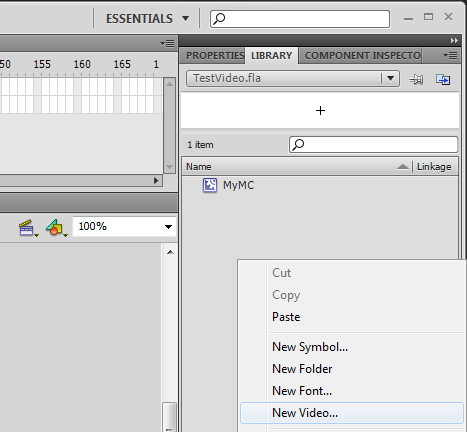

Convert Video
To play a video with Scaleform you have to convert the video file into the .usm format.
The Scaleform video SDK comes with the tool ScaleformVideoEncoder.exe which allows converting .avi files into .usm format.
Loading Video into CRYENGINE
There are two ways to load a video into CRYENGINE:
1. Load the usm directly
On simple way to display a video: Directly load the usm file via the IFlashPlayer instance.
IFlashPlayer* pFlashPlayer = gEnv->pSystem->CreateFlashPlayerInstance();
bool bRes = pFlashPlayer->Load("myvideo.usm");Now you can render the video like any other gfx file.
pFlashPlayer->Advance(fDeltaTime);
pFlashPlayer->Render();2. Embed a "linked video" object into your Flash asset
Another way is to place a "linked video" object into your Flash file, load the .usm file with a NetStream object and attach it to your linked video object.
To add a video object to your Flash asset, right-click on the library and choose "New Video..." from the context menu.

Place the video object onto the stage and set the instance name, e.g. "MyVideo". Then add following ActionScript code in your fla file:
// enable gfx extensions
_global.gfxExtensions = true;
// create new NetStream object with an NetConnection object
var NetC = new NetConnection();
NetC.connect(null);
ns = new NetStream(NetC);
// attach NetStream to the linked video object on stage
MyVideo.attachVideo(ns);
// play the video
onLoad = function()
{
ns.play("myvideo.usm");
}
If you want to get information about the video state e.g. to send notifications via fscommand to your C++ code you can add an "onStatus" function to your ActionScript:
// listening to video events
ns.onStatus = function (infoObject)
{
if (infoObject.level == "status")
{
if(infoObject.code == "NetStream.Play.Start")
fsCommand("onVideoStart");
else if (infoObject.code == "NetStream.Play.Stop")
fsCommand("onVideoStop");
}
else if (infoObject.level == "error")
{
if (infoObject.code == "NetStream.Play.StreamNotFound")
fsCommand("onVideoNotFound");
}
}